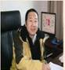
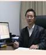
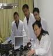
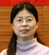
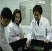

北京工业大学应用数理学院 学科学位点简介： 北京工业大学应用数理学院是由原应用物理系和应用数学系组建而成，它的前身是1960年学校创建之初成立的数理系。学院现有数学、物理学和光学三个一级学科。数学学科设有博士后流动站、一级学科博士学位授权点和一级学科硕士学位授权点，涵盖基础数学、计算数学、概率论与数理统计、应用数学、运筹学与控制论。概率论与数理统计和应用数学为北京市重点建设学科；物理学科设有博士后流动站、一级学科博士学位授权点和一级学科硕士学位授权点，涵盖光学、凝聚态物理、理论物理等学科。光学为国家重点学科，凝聚态物理为北京市重点学科。光学工程设有一级学科博士学位授权点和一级学科硕士学位授权点。学院设有信息与计算科学和应用物理学（光通信与光电子技术）两个本科专业，均已入选北京市特色专业建设计划。目前在校学生人数：博士生 65人、硕士生215人、本科生615人。 师资队伍： 学院设有基础数学、计算数学、概率与数理统计、应用数学、运筹学与控制论、信息光电子、应用物理、实验物理、理论物理九个学科部。现有教职工147人，专任教师117人，其中博士生导师19人、硕士生导师67人、教授30人、副教授和高级工程师53人、具有博士学位的教师83人。多名教授是国内外知名学者和专家，多人享受国务院政府特殊津贴，多人入选新世纪百千万人才、教育部新世纪优秀人才、北京市优秀人才、北京市科技新星等人才项目。另外聘请多名国内外著名学者来院兼职工作。 科研环境： 学院拥有良好的软硬件科研环境，拥有大型计算机房和各类物理实验室，学校图书馆和数理分馆拥有丰富的馆藏资料和电子资源。近年来，学院承接863、973、国家及北京市自然科学基金等各类科研项目数十项，获得国家和省部委级奖励30多项，取得发明专利10余项，在国内外刊物发表学术论文数百篇。学院与美国、欧洲国家、日本、加拿大、澳大利亚、俄罗斯等国家建立了广泛的合作联系和学术交流关系。 招生就业： 硕士研究生按招生方向报考，按数学、物理学和光学工程三个一级学科招生，学科内优先调剂，充分保护第一志愿考生，录取工作遵从公开、公平、公正原则。近三年录取分数线为当年国家公布的复试分数线，上线考生录取比例达到98%以上，其中公费生超过80%。招生规模每年数学学科为40-45人、物理学科为30-35人，光学工程学科10-12人。毕业生中1/3出国或在国内攻读博士学位、1/3从事文化教育事业、1/3在企事业单位工作。博士研究生每年招收15名左右，毕业生主要在高等院校或科研院所工作。研究生培养质量得到校外同行和用人单位的好评，许多毕业生已成为用人单位的骨干力量。 |
| 类型 | 学科 | 专业 | 招生方向 |
| 硕士 (学术型) | 数学 | 基础数学、计算数学、概率论与数理统计、应用数学、运筹学与控制论 | 非线性分析及其应用、小波分析、代数表示论、拓扑学、微分几何、复分析、线性模型与多元分析、非参数统计及数据分析、应用统计、应用概率、偏微分方程理论应用与计算、偏微分方程与图像处理、偏微分方程的数值解及其应用、常微分方程与动力系统、非线性动力学与控制、最优化理论及其应用、运筹学、计算组合数学及方法论、模糊数学与应用、信息科学中的算法研究、科学计算、计算机应用 |
| 物理学 | 光学、凝聚态物理、理论物理 | 粒子物理与超弦场论、超弦理论与宇宙学、粒子物理理论、原子核理论、场论及其在凝聚态物理学中的应用、量子物理与量子信息理论、固体的光散射、新型材料的物性与应用、光电信息材料物理、凝聚态物理理论、光学信息处理与光通信技术、智能光纤传感与集成化系统、新型激光器及超快过程、纳米光学与技术 | |
| 光学工程 | 纳米光学与技术、光学信息处理与光通信技术、新型激光器及超快过程、智能光纤传感与集成化系统 | ||
| 硕士 (专业型) |
应用统计 | 生物医学统计、精算统计、数量金融、质量管理统计 | |
| 博士 | 数学 | 概率论与数理统计 | 应用统计、 非参数统计与数据分析、 应用概率 、小波分析 、非线性泛函分析、偏微分方程及其应用、 代数表示论 、量子群及其表示、拓扑学 |
| 物理学 | 光学、凝聚态物理、理论物理 | 超弦理论与宇宙学、固体微结构与性能、光信息处理与光通信器件、 激光超短脉冲与新型激光器件、 纳米光学与技术、新型半导体光电材料与器件、薄膜材料物理 | |
| 光学工程 | 纳米光学与技术、光学信息处理与光通信技术、新型激光器及超快过程、智能光纤传感与集成化系统 |
招收博士生导师16人（前10人为数学学科、后6人为物理学科）：
王术 教授 | 刘有明 教授 | 李云章 教授 | 李寿梅 教授 | 张忠占 教授 | 杨士林 教授 |
|  |  |  | |||
姚海楼 教授 | 程曹宗 教授 | 彭良雪 教授 | 薛留根 教授 | 王大勇 教授 | 王丽 教授 |
|  |  | 热诚欢迎有志青年报考北京工业大学应用数理学院！ | ||
邓金祥 教授 | 宋晏蓉 教授 | 张新平 教授 | 黄永畅 教授 |
||
| 通讯地址：北京市朝阳区北京工业大学应用数理学院研究生工作办公室 邮编：100124 |
| 电话：010-67392178 传真：010-67391738 E-mail：lxm@bjut.edu.cn |